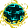

英語版 CrawlWiki の記事「Orb of appropriateness」(0.34 向け、2026-02-04 版)の翻訳です。原文の著者は編集履歴をご覧ください。
お誂え向きの球体(orb of appropriateness)は、ゾットの領域に出る球体のモンスターを指す、ゲーム内部での呼び名だ。

1回のゲームでゾットの領域に出る球体は1種類だけで、どれが出るかは諸宗派の寺院とゾットの領域の入口のまわりにある像で分かる。像を見たあとなら、ダンジョンの概要の画面(ctrl-o)でも、分岐の一覧の下にそのゲームで出る球体の種類が書かれている。
なお、ジグラットにはこの制限がなく、どの種類の球体も出てくる。